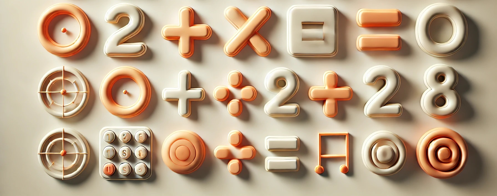

What Should a 6th Grader Know by the End of the Year?

Grade 6
Grade 6 marks the beginning of middle school for many students, and with it comes a big leap in responsibility, independence, and academic challenge. It’s a year where students transition from learning foundational skills to mastering and applying them in deeper, more analytical ways. By the end of sixth grade, students should be ready for more advanced subjects, increased workloads, and greater personal accountability.
Here’s a detailed look at what a sixth grader should know by the end of the school year.
Reading Skills
Sixth-grade students should be able to:
⁕ Read and analyze complex texts across genres: novels, historical fiction, science articles, persuasive texts, and poetry.
⁕ Determine central ideas and themes with supporting evidence.
⁕ Identify literary devices like imagery, irony, metaphor, and symbolism.
⁕ Analyze characters’ motivations and development.
⁕ Compare and contrast texts, authors’ viewpoints, and arguments.
⁕ Understand and interpret figurative and academic language.
⁕ Read fluently and apply comprehension strategies when reading independently.
Writing Skills
By the end of sixth grade, students should be able to:
⁕ Write multi-paragraph essays with well-developed ideas and logical organization.
⁕ Create strong thesis statements and support them with evidence and reasoning.
⁕ Write in a variety of styles: argumentative, informative, narrative, and explanatory.
⁕ Use advanced punctuation, proper grammar, and varied sentence structures.
⁕ Conduct short research projects, summarize sources, and cite them appropriately.
⁕ Revise and edit their work for clarity, coherence, and technical accuracy.
Mathematics
Grade 6 math moves into abstract thinking and introduces foundational algebra concepts. Students should be able to:
⁕ Understand and work with ratios, rates, and proportions.
⁕ Divide fractions and perform all operations with decimals and fractions.
⁕ Use factors, multiples, and prime factorization.
⁕ Apply order of operations (PEMDAS) to multi-step problems.
⁕ Understand and apply concepts of negative numbers and coordinate planes.
⁕ Solve one-step equations and inequalities.
⁕ Analyze statistical data (mean, median, mode, range).
⁕ Find area, surface area, and volume of geometric shapes.
⁕ Interpret and create graphs, charts, and tables.
Science
Sixth-grade science focuses on exploration, observation, and inquiry. By year’s end, students often study:
⁕ Scientific investigation: formulating questions, designing experiments, and interpreting data.
⁕ Earth science: plate tectonics, earthquakes, volcanoes, weather, and the water cycle.
⁕ Physical science: matter, energy, motion, and forces.
⁕ Life science: cells, body systems, ecosystems, and adaptation.
⁕ Basic chemistry: elements, atoms, and the periodic table.
⁕ Environmental science: human impact on the environment and sustainability.
Social Studies
Depending on the curriculum, sixth-grade social studies may focus on world history or geography. Students should:
⁕ Understand ancient civilizations (Mesopotamia, Egypt, Greece, Rome, China).
⁕ Compare cultures, governments, and religions of historical societies.
⁕ Use maps, timelines, and primary sources to interpret events.
⁕ Analyze cause and effect in historical events.
⁕ Understand civic values, rights, and responsibilities in societies.
⁕ Explore early global trade, migration, and technological advances.
Speaking and Listening
By the end of Grade 6, students are expected to:
⁕ Participate in structured discussions, debates, and collaborative projects.
⁕ Present research and opinions clearly and confidently.
⁕ Summarize key points from speakers and sources.
⁕ Use multimedia tools (slides, images, videos) to support presentations.
⁕ Ask relevant, thoughtful questions and respond respectfully to others.
Social and Emotional Development
Sixth grade is a time of rapid growth—physically, emotionally, and socially. Students typically:
⁕ Show increased responsibility for managing homework, deadlines, and long-term projects.
⁕ Navigate changing friendships, peer dynamics, and group work.
⁕ Develop self-awareness, confidence, and emotional regulation.
⁕ Practice empathy, inclusion, and positive communication.
⁕ Handle setbacks and challenges with greater resilience.
Technology and Digital Literacy
Sixth graders should be proficient in using technology for learning. By year’s end, they typically:
⁕ Type efficiently and format documents for different purposes.
⁕ Use presentation tools (Google Slides, PowerPoint) and digital note-taking apps.
⁕ Conduct online research using keywords, filters, and trusted sources.
⁕ Practice digital citizenship: online safety, etiquette, plagiarism, and privacy.
⁕ Create multimedia projects that integrate images, video, and sound.
Creative Arts and Physical Education
Creative and physical expression remain vital:
⁕ Explore personal expression through art, music, and drama.
⁕ Understand artistic techniques and elements (color theory, musical notation, perspective).
⁕ Participate in team and individual sports.
⁕ Practice physical fitness, sportsmanship, and healthy habits.
How Parents Can Support
⁕ Encourage reading across subjects and genres.
⁕ Talk about current events and critical thinking.
⁕ Create a structured study routine and quiet workspace.
⁕ Model organization, goal-setting, and time management.
⁕ Keep communication open about school, friendships, and emotions.
⁕ Support extracurricular interests to help your child discover passions.
Final Thoughts
Grade 6 is more than just another year, it’s a launchpad for middle school and beyond. Students start becoming more independent learners, critical thinkers, and self-aware individuals. With guidance from both home and school, they’ll end the year prepared for the challenges and opportunities that lie ahead in upper grades.